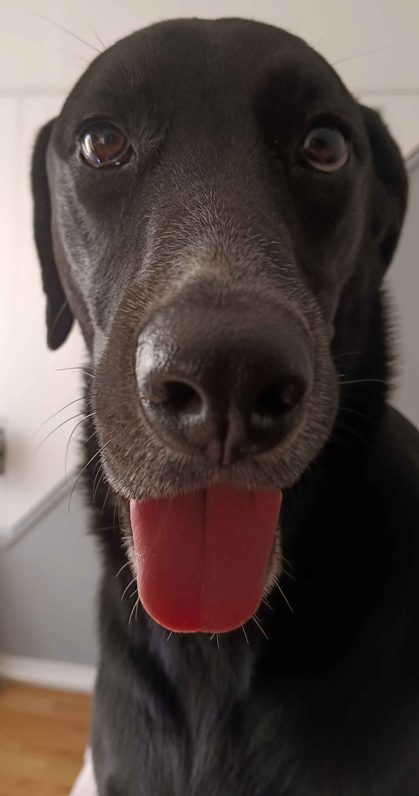
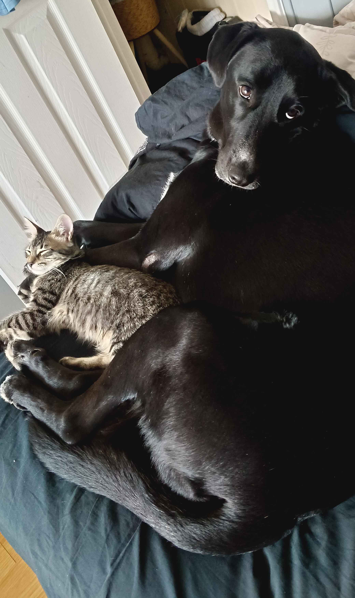
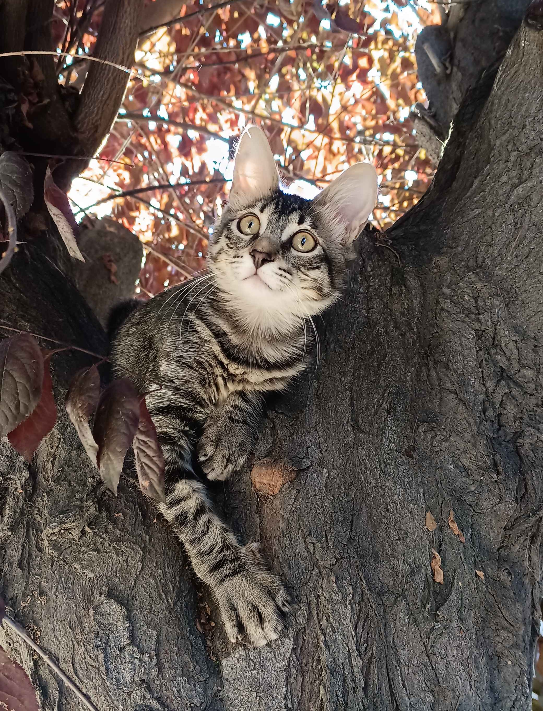
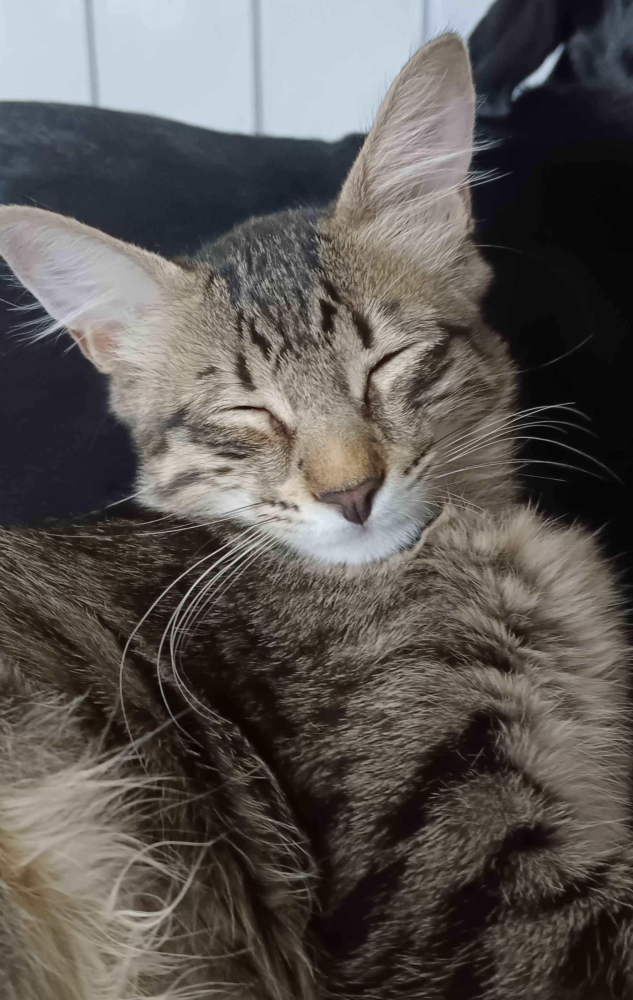
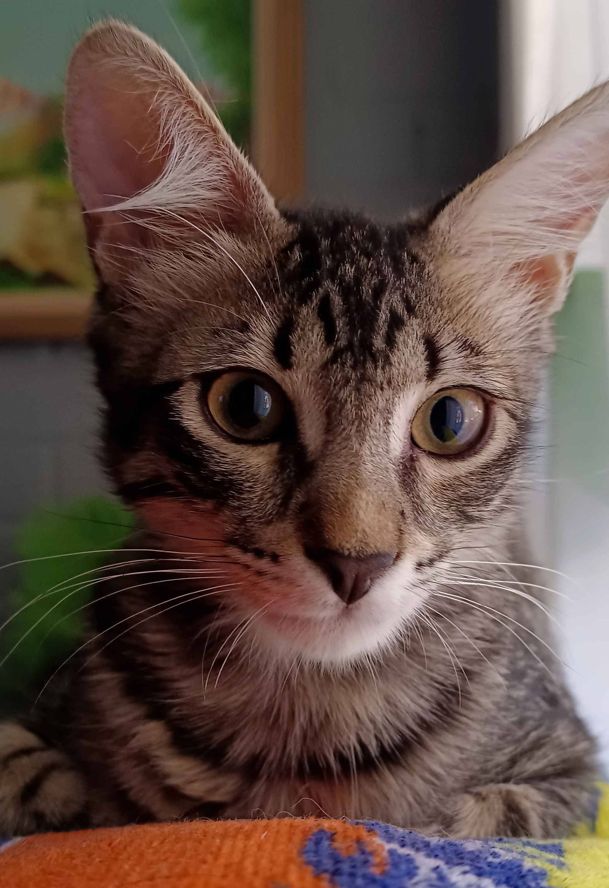
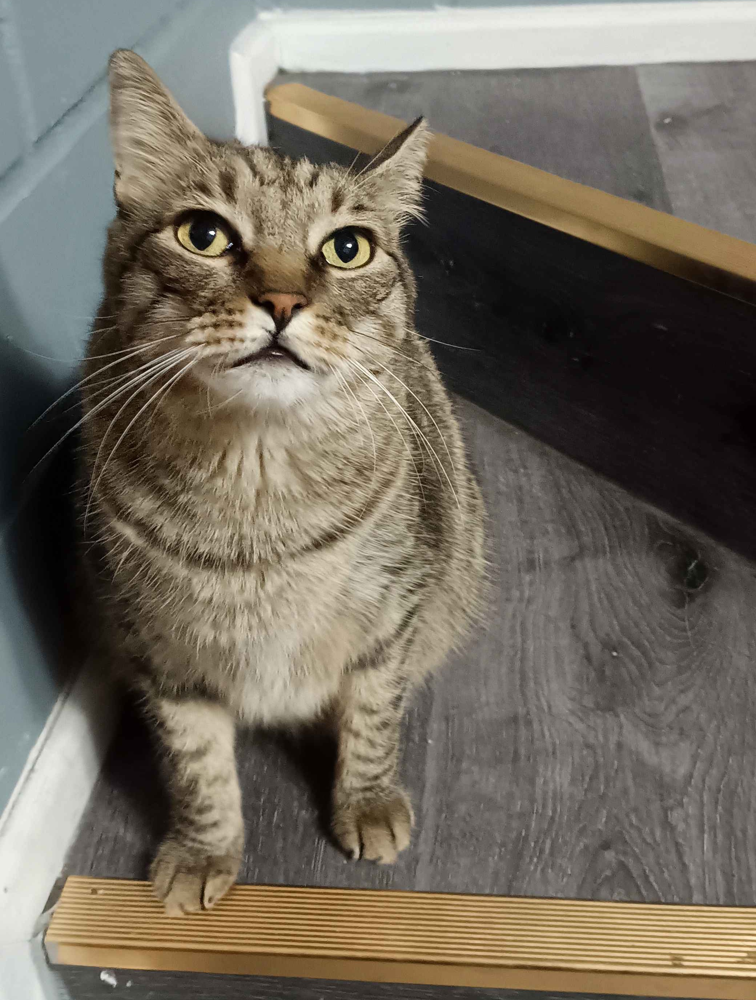
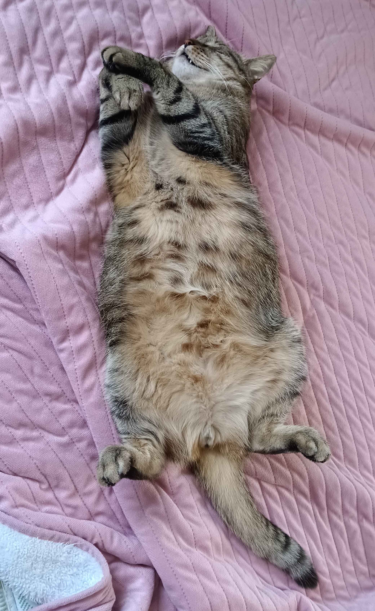
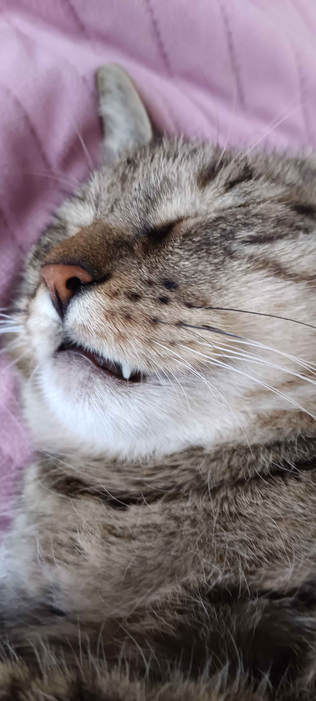
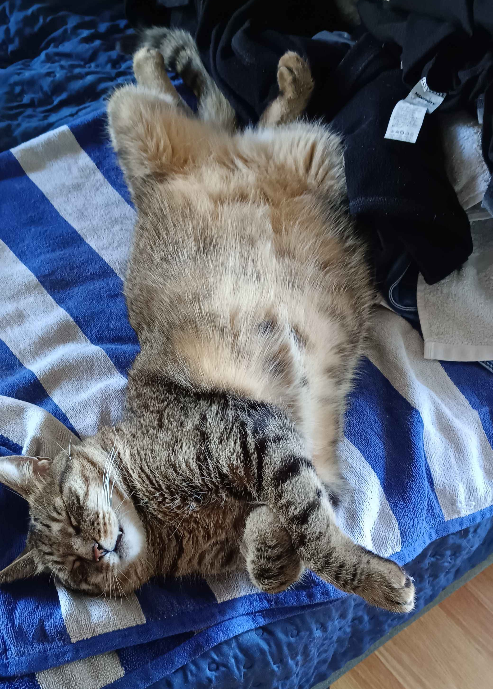

Mona 🐕
Mirada de loca
🐾 2 años • Le Gusta Correr • Fan N°1 de One PieceConocé a cada uno de ellos, sus historias y personalidades
¿Cual de los 3 Come menos?
Mirada de loca
🐾 2 años • Le Gusta Correr • Fan N°1 de One Piece
Mona casi formando un pensamiento
🐾 2 años • Grande • Juguetona
Les gusta Dormir Juntas
🐾🐈⬛ 2 Años y 5 Meses • Les Gusta Jugar • Tiernas
Le gusta escalar y dormir en lugares altos
🐈⬛ 5 meses • Una Bebe • Tierna
Acostada en su cama con cara de loca
🐈⬛ 5 meses • Loca • Energica
Tiene la mirada de los 1000 pollos
🐈⬛ 5 meses • Pequeña • Le Gusta El Churu
Fino y Elegante
🐈 6 años • Gato Flaco • Tiene La Mirada De Los 1000 Churus
Ama dormir
🐈 6 años • Le Gusta Dormir • Duerme Casi Todo El Dia
Y dormir
🐈 6 años • Tranquilo • Literalmente Ronca
Y dormir aun mas
🐈 6 años • Le Gusta El Pollo • Independiente